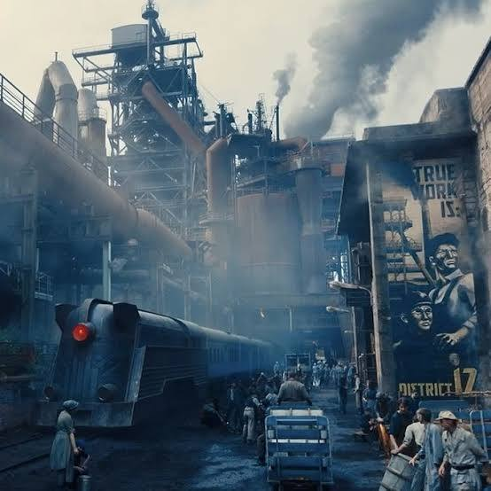

Panem Broadcast Gallery
Archived visuals capturing pivotal turning points across the districts and the Capitol.

Chronology &] Key Dates
The Hunger Games (Book 1)
Suzanne Collins publishes the opening novel that introduces Katniss Everdeen and District 12.
The Hunger Games (Movie 1)
The first live-action film adaptation premieres in theaters, starring Jennifer Lawrence.
The Ballad of Songbirds &] Snakes
The first prequel novel drops, focusing on a young Coriolanus Snow.
Sunrise on the Reaping (Book)
The prequel novel centered on a young Haymitch Abernathy's 50th Hunger Games is published.
Sunrise on the Reaping (Movie)
The newest theatrical film adaptation releases worldwide.
Key Characters
Katniss Everdeen
The Girl on Fire / District 12A fierce, resourceful bowhunter who volunteers for the 74th Hunger Games in place of her younger sister, Prim, inadvertently sparking a national rebellion.
Peeta Mellark
The Baker's Son / District 12A gentle and strong-willed artist-tribute who uses charm, public speaking, and painting skills to protect Katniss through the games and the war.
Haymitch Abernathy
District 12 MentorA cynical, sharp-witted past victor of the 50th Hunger Games (Second Quarter Quell) who guides Katniss and Peeta with unorthodox strategy.
President Coriolanus Snow
Ruler of PanemThe ruthless, rose-loving authoritarian dictator of the Capitol who uses fear, media control, and the Hunger Games to suppress the 12 districts.
3 Fun Facts About the Series
An Inspiration From Reality TV
Suzanne Collins got the idea for the story while channel-surfing between reality television shows and footage of the Iraq War, realizing how media could easily blur entertainment and real-life tragedy.
Jennifer Lawrence's Hair Transformation
Jennifer Lawrence had to dye her naturally blonde hair dark brown for the role of Katniss and wore a special dark brown wig for parts of the sequels to protect her hair.
Massive Global Bestseller
The original trilogy has sold over 100 million copies worldwide and has been translated into more than 50 different languages.